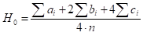
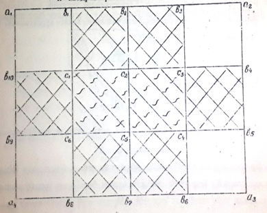
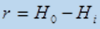
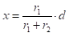
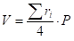
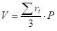
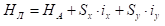
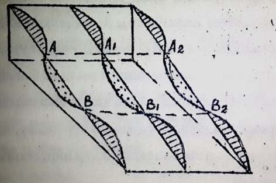
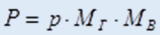
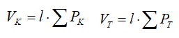

II bob.
Plan va kartada gorizontal va qiya tekislik
ishlarini loyihalash.
2.1 Gorizontal va qiya tekislikni loyihalash
Ko‘pincha, injenerlik inshootlarni quriladigan maydon sirtini, xamda yer bulaklarni
gorizontallar bilan tasvirlash kifoya qilinmaydi Injenerlik ishlarning talabiga qarab
loyihaga ko‘ra joyni turli nishabliklar bilan tekislash kerak bo‘ladi. Buning uchun vertikal
tekislash ishlari olib boradi.
Injenerlik - kidiruv ishlarni bajarish jarayonida joyning yirik masshtabli topografik
planlari (1:500-1:2000, relef kesimi balandligi h = 0,25 - 0,5m) tuziladi. Buning uchun
ko‘pincha yuza nivelirlash ishlari bajariladi.
Vertikal tekislash loyihasi ikki ko‘rinishda bajarish mumkin:
- gorizontal tekislikni loyihalash:
-qiya tekislikni loyihalash
Gorizontal tekislikni loyihalash
Gorizontal tekislikni loyihalash ko‘pincha yer sirti kvadratlar bo‘yicha
nivelirlangan
planlar asosida loyihalanadi. Bunda inshootning vazifasi va texnik sharoitiga qarab,
nuqtalarning loyihaviy balandliklari bo‘yicha yer ishlari xajmi, ya’ni qazish va to‘kish
ishlarini xajmi topiladi.
Loyihalanayotgan tekislikning o‘rtacha loyiha balandligi qo‘yidagi formula yordamida
aniqlanadi

bu yerda bir, ikki va to‘rt kvadratlar uchun umumiy bo‘lgan balandliklar yig‘indisi ;
n - kvadratlarni soni

Xisoblangan N0 bo‘yicha ishchi balandliklar qo‘yidagicha topiladi

va uning ishorasi manfiy bo‘lsa yer qazish chuqurligini, musbat bo‘lganda esa tuproq to‘kish
balandligini ko‘rsatadi. Kvadrat uchlaridagi ishchi balandliklari bir xil ishorali bo‘lganda
u to‘liq kvadrat, uchlarining ishoralari turlicha bo‘lganda esa to‘liksiz kvadrat deyiladi.
Bunday kvadratlar ichida nol ishlari chizig‘i, ya’ni loyihaviy tekislikni yer sirti
bilan
kesishish chizig‘i yotgan bo‘ladi va uning plandagi o‘rnini tegishli kvadratlar uchidan
aniqlash uchun masofa qo‘yidagicha xisoblanadi

bu yerda r1, r2- ishchi balandliklar;
d - kvadrat tomonlarining uzunligi
Planda topilgan chiziq, yer qaziladigan va tuproq to‘kiladigan yuzalarning chegaralari
xisoblanadi.
Yer ishlari kartogrammasini tuzish.
Yer ishlari kartogrammasini tuzish yer qazish va tuproq to‘kish xajmlarini topishdan
boshlanadi. Kartogrammad xaqiqiy, loyihaviy va ish balandliklari kiymatlari, xamda nol
chiziqlari xolati ko‘rsatiladi.
To‘rt qirrali prizmalar uchun

Uch qirrali prizma uchun

Bu formulalarda - kvadrat bo‘yicha ishchi balandliklar yig‘indisi ;
P - prizma asosi yuzasi
Yer xajmlarini xisoblashda nazorat ishlari olib boriladi. Shunda qazilma xajmlari Vk
bilan to‘kilma xajmlari Vt bir-biriga teng bo‘lishi kerak, ya’ni
Vk ≈ Vt
Loyihalashda Vk bilan Vt – ni farqi 3 – 5 % dan oshmasligi kerak.
Suv oqishini ta’minlash uchun qiya tekislik bo‘ylama ix va kundalang
iu nishabliklar, xamda
boshlang‘ich A nuqta balandligi NA bo‘yicha loyihalanadi.
Boshlang‘ich NA nuqtadan Sx , Su masofalarda joylashgan
tegishli kvadrat uchining loyiha
balandligi qo‘yidagicha aniqlanadi

Kvadratlar uchlarining loyihaviy va yer balandliklarini farqlari bo‘yi-cha ishchi
balandliklarni qiymatlari xisoblanadi. Qolgan ishlar gorizontal tekislikni loyihalash
masalasi singari amalga oshiriladi.
Qiya tekislikni vertikal profillar bo‘yicha loyihalash.
Bu usulni qo‘llash uchun millimetrli qog‘ozda berilgan oraliqdagi joy chiziqlari
bo‘yicha
ma’lum gorizontal 1: MG va vertikal 1: MV masshtablarda bo‘ylama profillar yasaladi.
Bo‘ylama profillar tegishli ketma-ketligida joylashtirilib, ularning har birida loyiha
chizig‘i o‘tkaziladi.
Buning natijasida profil va loyihaviy chiziqlar orasida shtrixlangan va nuqtali
shakllar,
tegishli ravishda yer qazish va tuproq to‘kish prizmalari asoslari xosil bo‘ladi

Prizmalar xajmlarini xisoblash uchun planimetrda, paltkada yoki millimetrli qog‘ozda ular
asoslarining yuzalari qo‘yidagicha formula asosida xisoblanadi:
bu yerda R- shaklning

profildagi yuzasi,
MG, MV – tegishli ravishda profil gorizontal va vertikal
masshtablarining maxraji.
Bu qiymatlardan foydalanib, yer qazish va tuproq to‘kish xajmlari tegishli ravishda ushbu:

formulalar yordamida xisoblanadi, bu yerda l- chiziqlar orasidagi masofa.